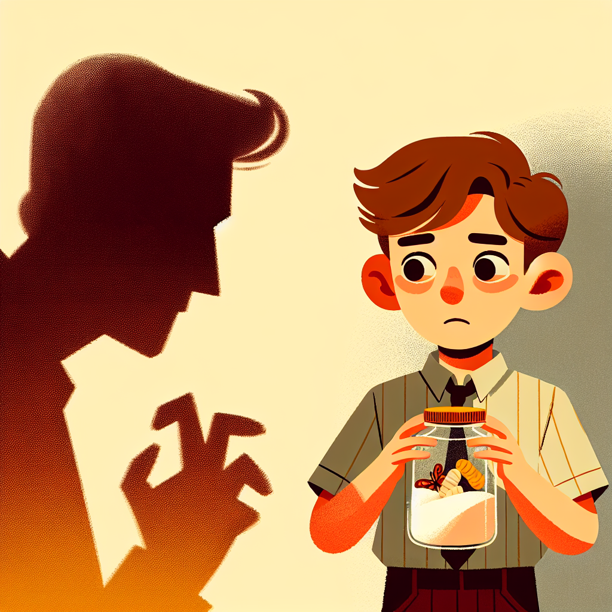
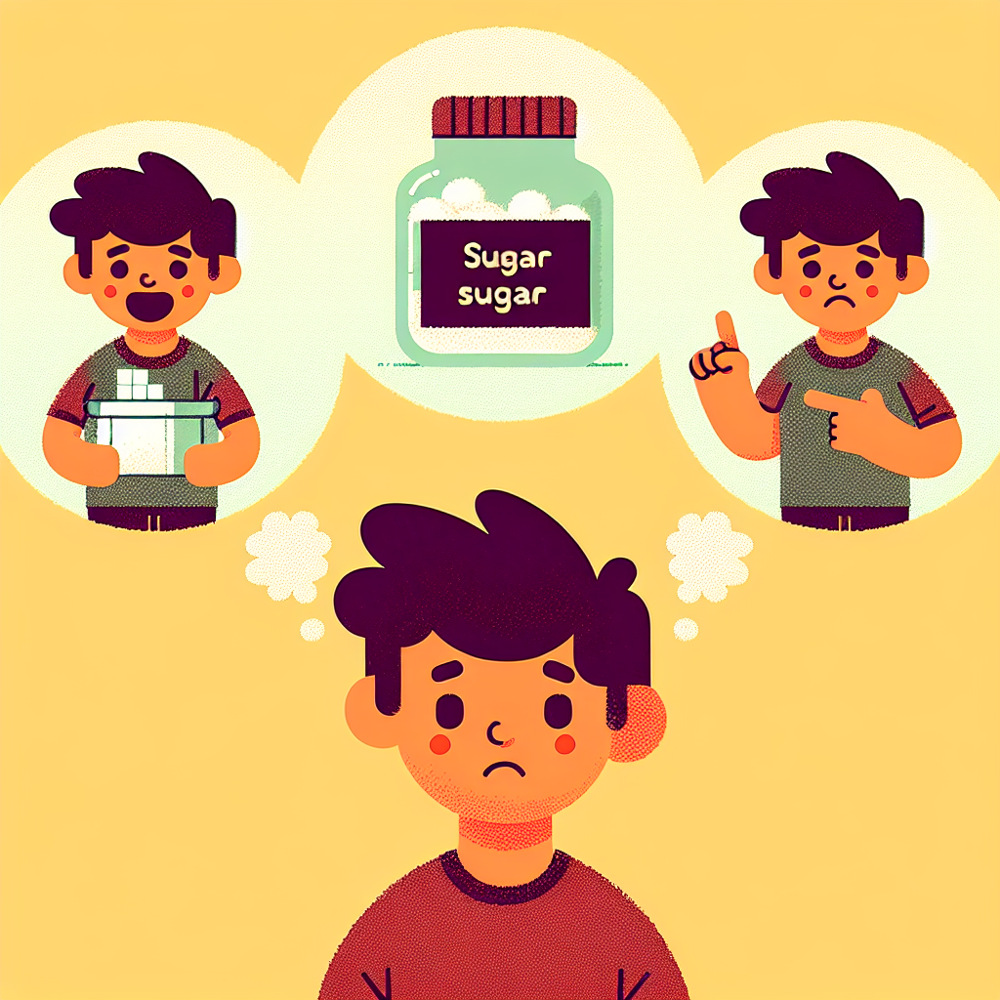
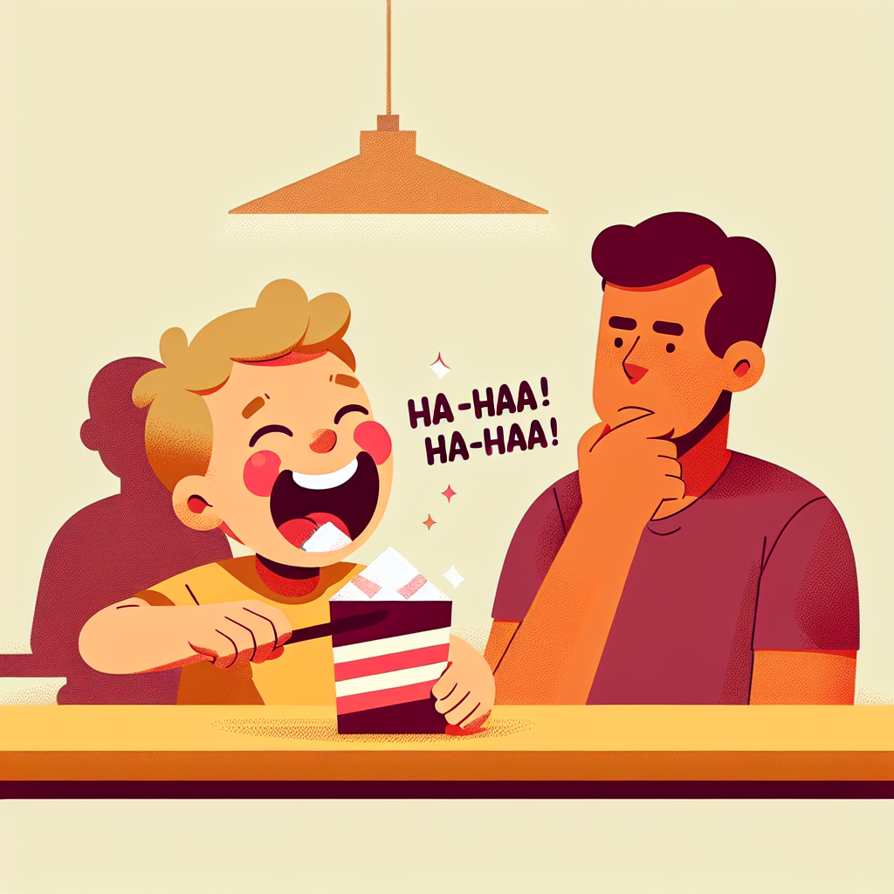
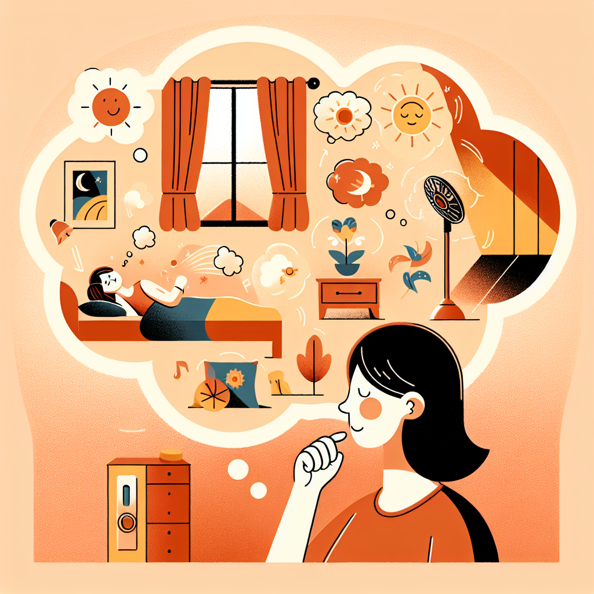
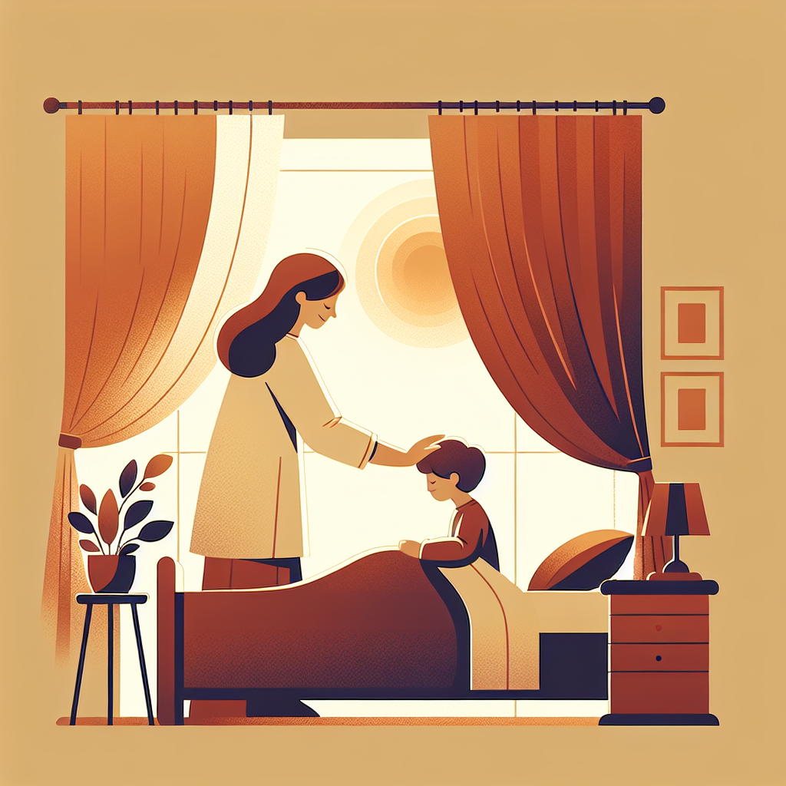

It is not just a thing you make; it is the process through which we solve.
Design Thinking is something we are already familiar with in our daily lives. We just haven't given it a formal name yet.
"Every human naturally practices problem-solving. Design thinking is the formalization of this instinct."
Young Johnny has been caught red-handed eating sugar from the jar. A shadow looms over him—he is in trouble. He wants the sugar, but he desperately needs to avoid punishment.
In a split second, his mind races through a deeply ingrained biological process:

1. ClarityUnderstanding he's caught.
Click to expand
2. IdeationSwallowing sugar? Lying?
Click to expand
3. ExecutionThe "Ha-ha-ha" distraction.
Click to expandThis mirrors the core design process: Clarity → Ideation → Execution.
Waking a child requires Empathy. A mother adjusts her approach depending on the context of the day, proving that design is not a one-size-fits-all reaction.
Exam Day or Vacation?
Click to expand
2. IdeationOptions: alarms, fans, water?
Click to expand
3. ExecutionA specifically tailored wake-up.
Click to expandProfessional design mirrors the medical process: gathering symptoms, prescribing a solution, and explicitly establishing a feedback loop to iterate.
Gathering patient symptoms.
Click to expandConsidering treatments.
Click to expand"Come back in 3 days."
Click to expand"Empty your mind, be formless, shapeless — like water." — Bruce Lee
Do not conform to a rigid framework—whether that of a designer, an engineer, or a creator—until you truly understand the pain the users are facing. Maintain fluidity so you can adapt to the problem, rather than forcing the problem to fit into a pre-existing mold.
Embrace ambiguity. Be comfortable not knowing the answer right away, allowing the user's needs to shape your structure instead of applying rigid frameworks.
You care deeply about the human condition and the real frictions people face before judging or jumping to solutions.
Once the user's pain is clear, become the orchestrator. Pull together insights, resources, tools, and even people from wherever possible to forge an optimistic prototype.
Every living thing responds to its environment to improve its situation.
Crows and Ravens using tools and logic to solve multi-stage puzzles. Advanced problem-solving.
Click to see the logic →Solving obstacle courses for food. Goal-oriented problem-solving.
Click to see him in action →Gaining Clarity. Understanding the user's problem as your own.
Looking for Options. Brainstorming multiple paths.
Prototyping. Implementing the best idea.
Feedback Loop. Testing and improving based on results.
Design is the ability to take the road less traveled to find innovative solutions. It isn't about never failing; it's about the ability to revise and try again.
"Two roads diverged in
a wood, and I—
I took the one less traveled by,
And that has made all the difference."